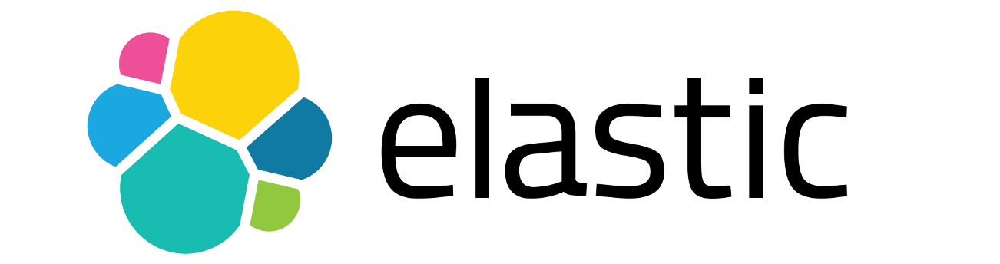
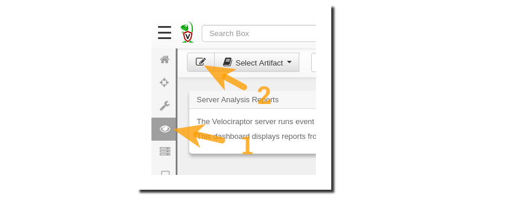
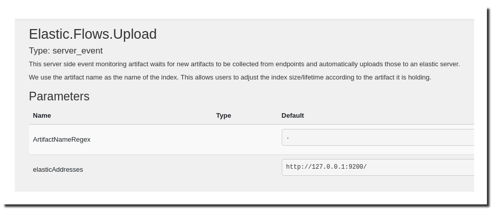
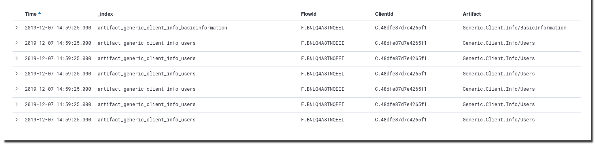
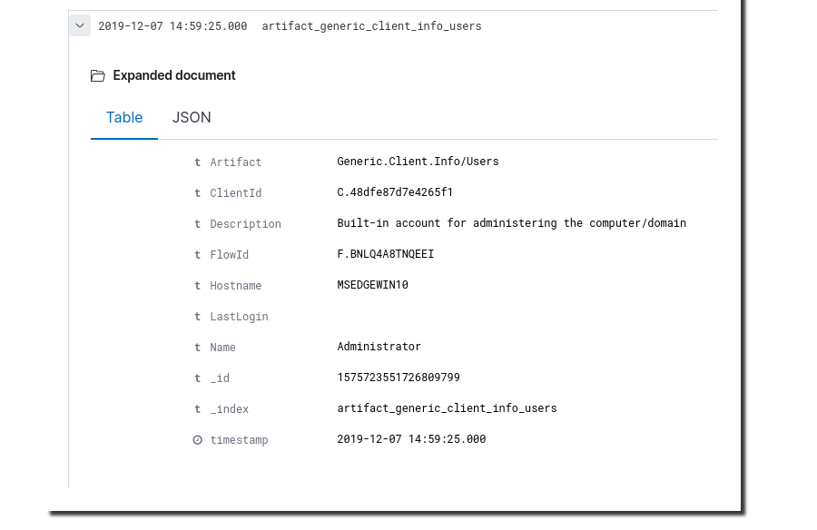
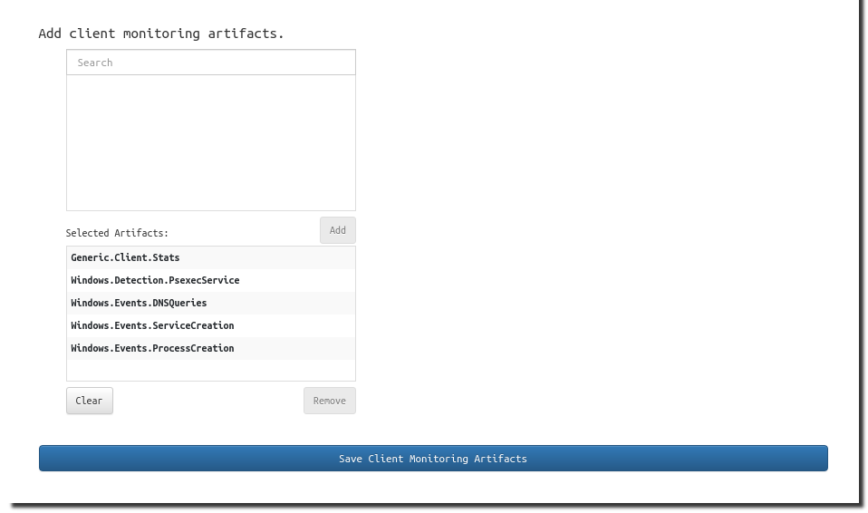
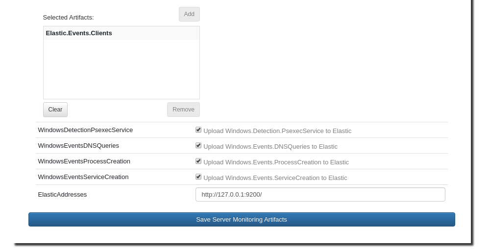
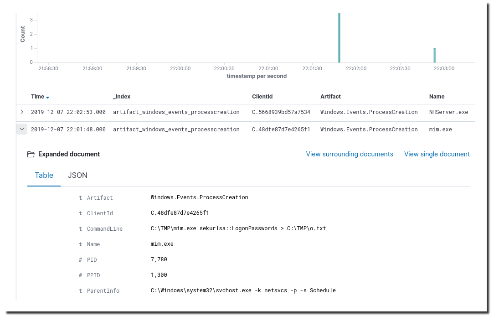

Since release 0.3.5 Velociraptor includes an Elastic VQL plugin plus two built-in server artifacts that demonstrate how to make use of this plugin.
Velociraptor is great at collecting oceans of information from a vast fleet of client machines but that information is, by default, only stored locally on the Velociraptor server.
In a typical deployment, responders and analysts tend to either…
use the VR GUI to browse/search the collected data, or
download/retrieve the data in the form of CSV or JSON files and work with it manually, possibly through an automated sequence of “post-processing” steps.
query the data via the Velociraptor API
The problem is that beyond the simplest deployment scenarios these approaches run into limitations pretty quickly due to the 3 Vs (Velocity, Variety & Volume) of data in modern IT environments. By design Velociraptor is a high-performance data collection tool and doesn’t intend to be an information management or analytics tool. For short-term/temporary deployments the included data management capabilities may be quite sufficient but for long-term/permanent deployments we don’t want our data to be so self-contained. We want to scale easily and reap the benefits of correlating our VR data with other security data sources, for example firewall/IPS logs and other detection systems.
In the DFIR and InfoSec world many popular tools rely on the Elastic Stack to provide backend storage and analytics capabilities rather than reinventing the wheel in that regard. Having the data in Elasticsearch means that you can apply your standard analytics tools and techniques without much concern for the origin of the data, and thus have a unified view of data from a variety of disparate sources.
Velociraptor supports this information management approach by providing out-of-the-box Elastic plugin and two VQL artifacts which together provide the capability of sending data to Elasticsearch.
The first VQL artifact that we will use to accomplish our goal is named Elastic.Flows.Upload
This artifact sends the results of Flows to Elasticsearch. It’s the easiest one to get started with because all you have to do is add the artifact to Server Monitoring and tweak a parameter or two if necessary.

As you can see in the screenshot below, the default parameters will work if you have Elasticsearch installed locally and listening on the default IP and port.

If not then you can easily change these details to match your environment. The artifact parameter named ArtifactNameRegex defaults to including the flow results from all artifacts. If you don’t want the output of all artifacts to go to Elastic then here you can also specify a subset of artifact names using a crafty regex.
Once you’ve added the *Elastic.Flows.Upload *artifact to Server Monitoring you can now kick off a flow or two to generate some data. Then go look in Elastic (via Kibana of course, but remember to first create a suitable index pattern so that you can see the data! An initial Kibana index pattern of “*artifact_**” will have you covered.)

You’ll notice that the Elastic index name is based on the Velociraptor client artifact name. So if you prefer, you can create distinct Kibana index patterns that will allow you to view and search through only a single artifact type at a time.
Expanding the view for a single document you should see something like this:

And that’s how easy it is to get your data into Elastic!
If you have an Elasticsearch cluster that uses authentication, non-standard ports or other customizations, you can create a custom artifact by copying the Elastic.Flows.Upload artifact and adding additional parameters to it in order to make it suit your non-standard environment.
This is slightly less easy than the previous step but only because it requires that you first configure one or more artifacts to collect client events.
Once the client events are being collected and received by the VR server, the Elastic.Events.Clients artifact will take care of forwarding these events to Elastic .
The artifact supports forwarding events from 4 built-in client event artifacts by default. These client event types can be selected/deselected and with a bit of customization even more types can be added to suit your needs:

To get the client events flowing to Elastic we must add the *Elastic.Events.Clients *artifact to Server Monitoring, just as we did with the Elastic.Flows.Upload artifact in the previous section.

When adding the artifact make sure to select the client event types that you would like to have forwarded. Also configure the Elastic IP:port. If your Elastic server needs further options than are available in the artifact parameters then simply create a copy of the Elastic.Events.Clients artifact and add the additional options to the custom artifact.
As before, we now go to Kibana to check out the results…

By integrating Velociraptor with the mature and widely-adopted Elastic Stack we can achieve significant scalability benefits. This also means that Velociraptor data can be made available to analysts who may not have the time or inclination to learn yet another tool. Having the data in Elastic also allows us to leverage the many excellent analysis and detection tools that have blossomed around the Elastic ecosystem, as well as make use of existing organizational expertise in these tools. The data can furthermore be enriched, combined and correlated with data from a wide variety of security tools that make use of Elastic as a data backend.